Setup shawdowsocks server using google cloud console
shadowsocks with mac os and ios
Setup your google cloud console and create an instance in google cloud console
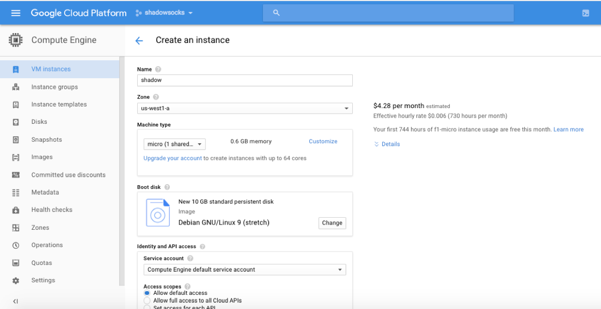create the instance also known as virtual machine. I am using linux Debian for this tutorial
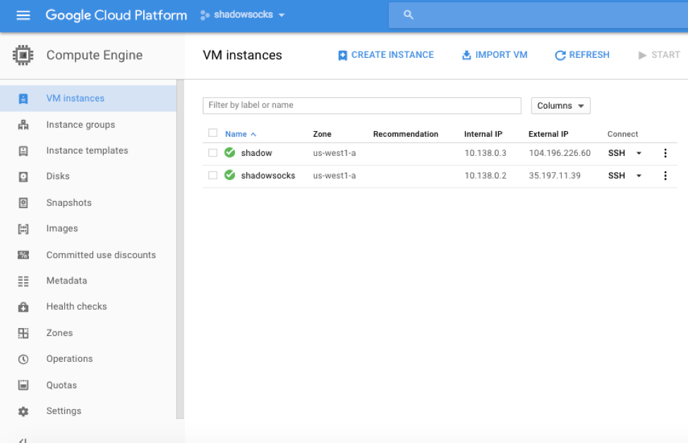Here is the instance we just created. Take note of the internal id and the external id. we will use both

We have to make a change to the google firewall for shadowsocks to connect
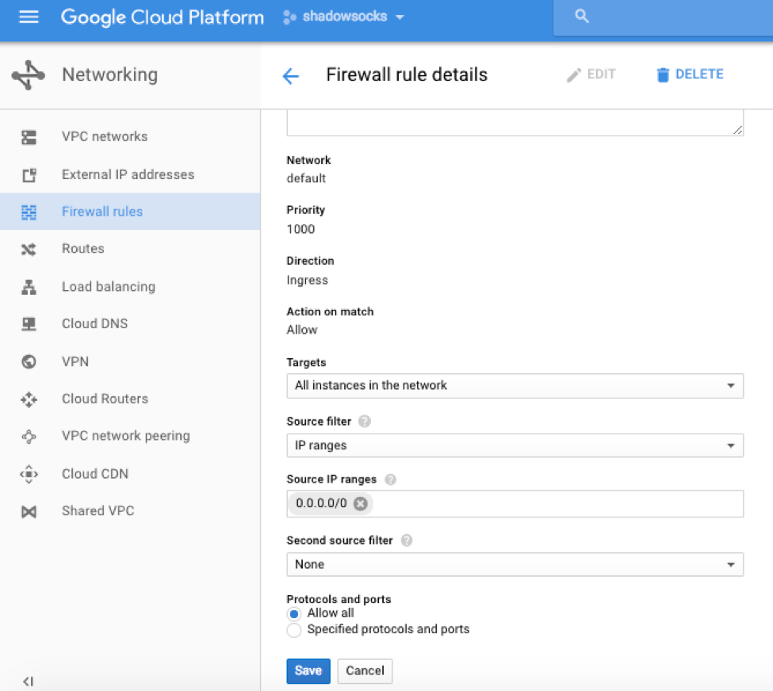copy my setting that I have in this photo. This is very important for shadowsocks to work.
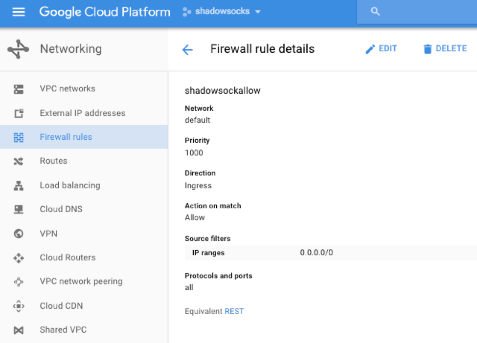 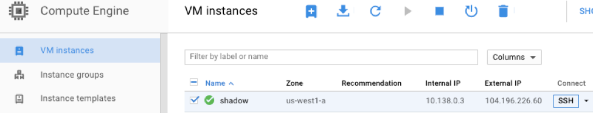 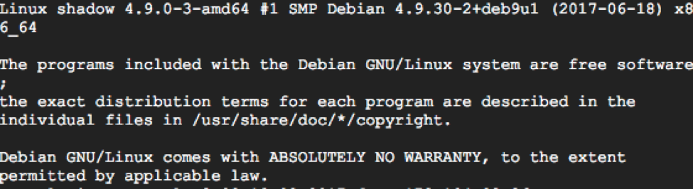Here we select the SSH button on it opens up SSH
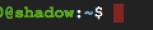type in these commands to install shadowsocks sudo apt update sudo apt install shadowsocks-libev
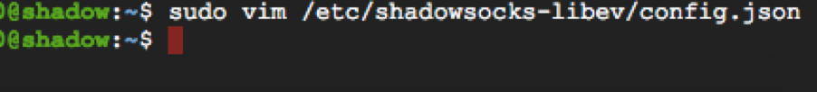sudo vim /etc/shadowsocks-libev/config.json
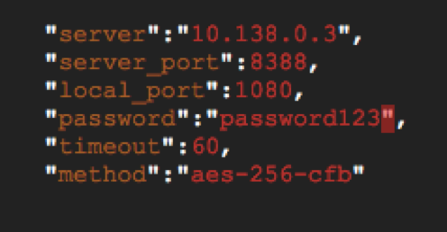Edit the configuration file Enter your internal ip address in the server – so my internal ip was 10.138.0.3 The internal ip address can be found on the instance area. The port number is good. Local port is good. Password can be changed. Timeout is good. Change the method to aes-256-cfb
to edit press shift i
To Save Press alt enter Type :x This will save and exit
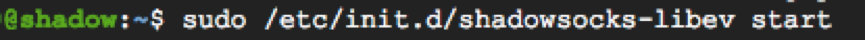lets start the server sudo /etc/init.d/shadowsocks-libev start
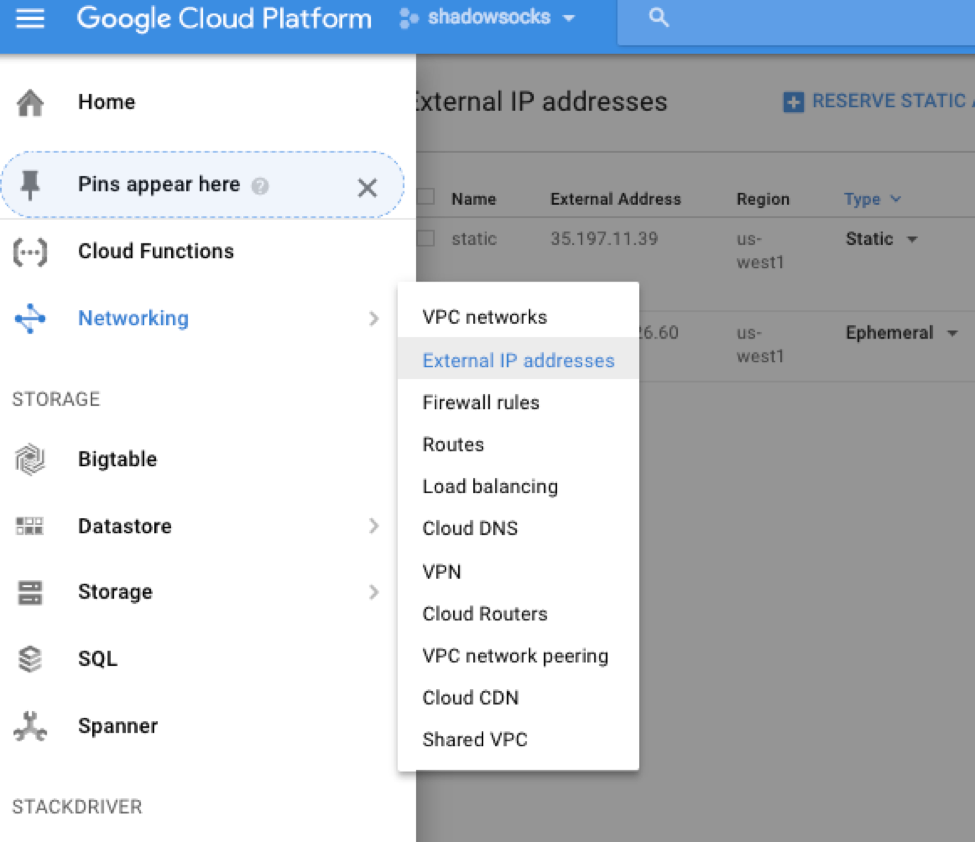we need to create a static ip address for the server
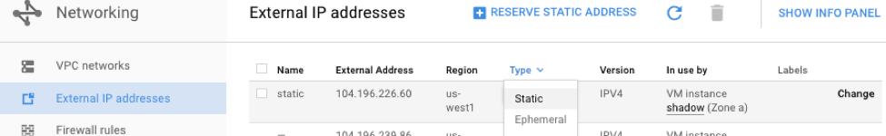we need to create a static ip address for the server
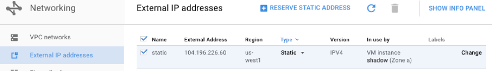change type from Ephemeral to static
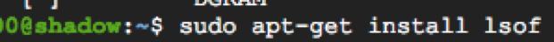sudo apt-get install lsof
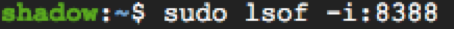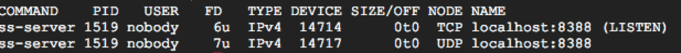
this looks good. We need to restart the VM now
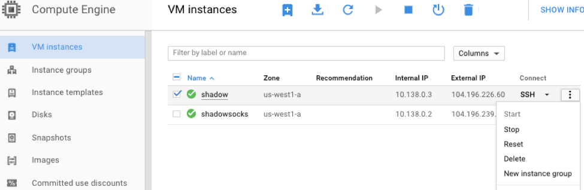Hit reset
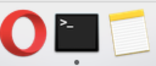open terminal on mac
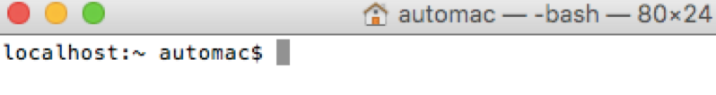type telnet and ip of your external ip and port number
telnet 104.196.226.60 8388
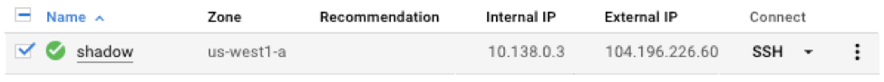 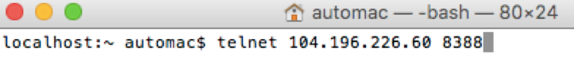 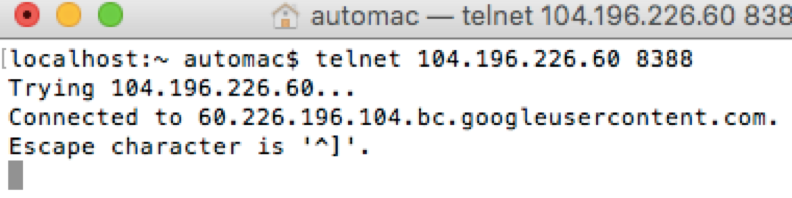That’s good we made a connection
Lets make a connection with a client now using mac os shadowsocks

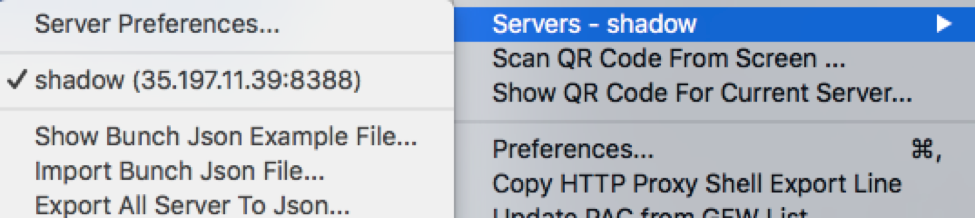
go to servers
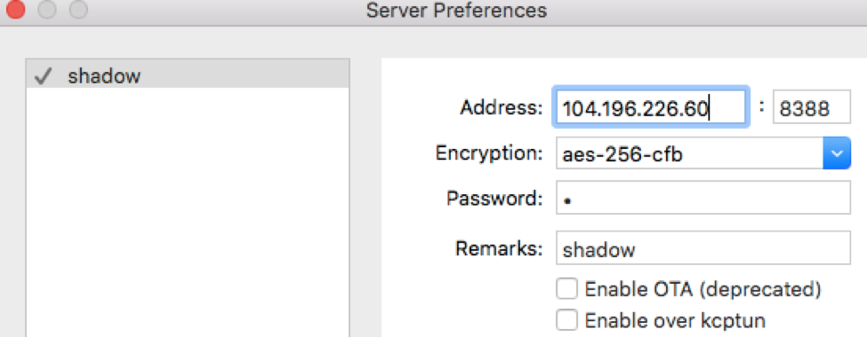add your external ip port number: 8388 encryption aes-256-cfb password: password123 Now you should be able to use google Make sure your password is correct
Shadowsocks for ios wingy ios
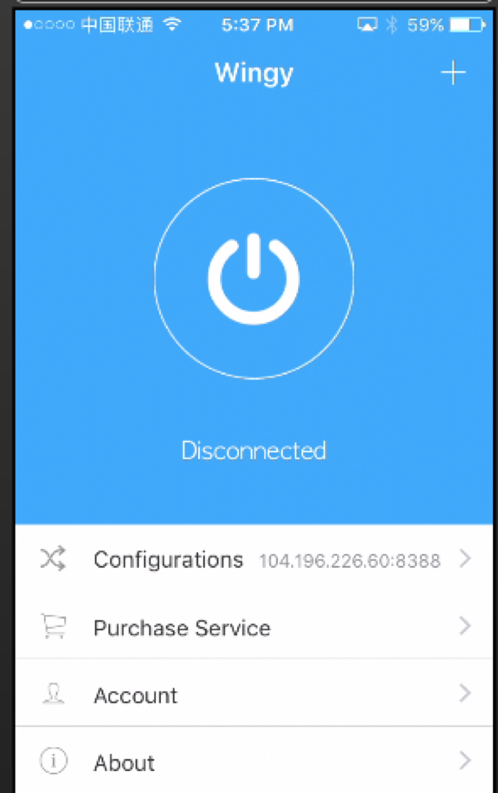go to servers
IOS iphone setup Wingy – HTTP ios apple store
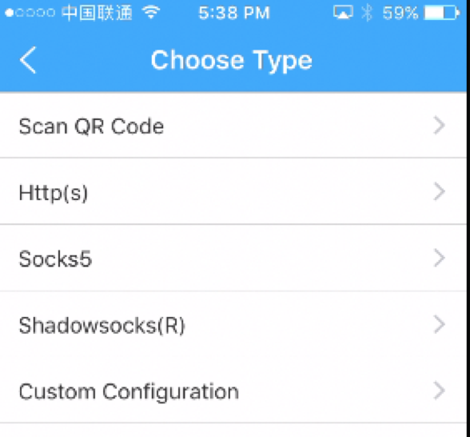go to servers
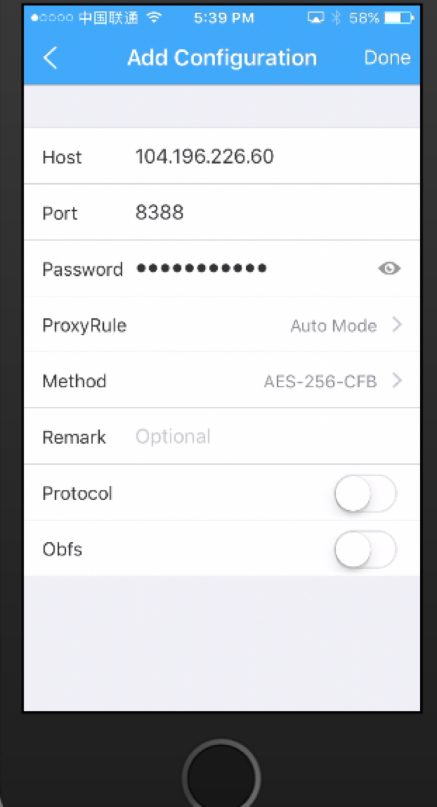add your external ip port number: 8388 encryption aes-256-cfb password: password123
if your having trouble connecting read agian. Make sure you set up the firewall rules correctly. make sure you use the external ip on the ios